Hokutoshi
Hokutoshi · Hokkaido
Hokutoshi
Highlighted on the Hokkaido map.
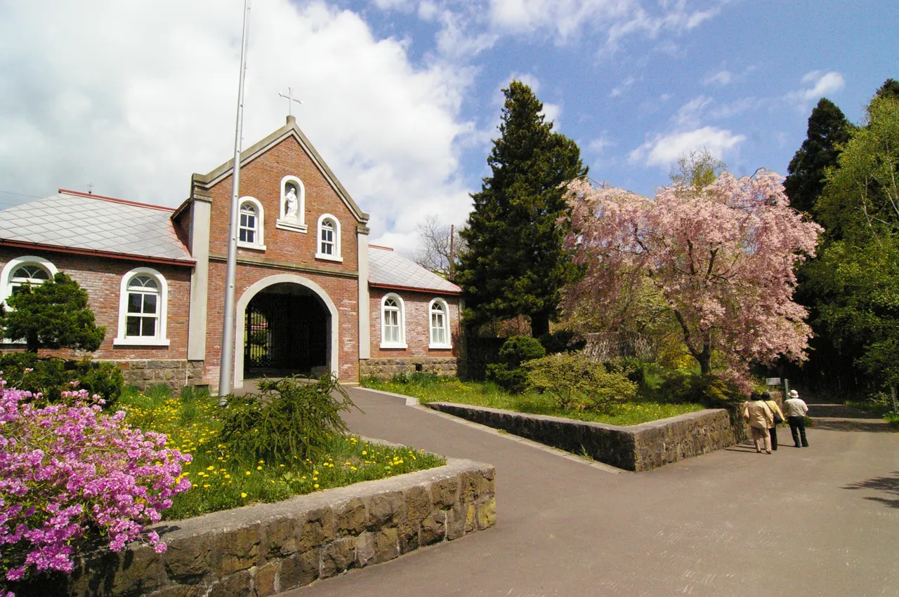
Stay
東前温泉しんわの湯 ホテル秋田屋
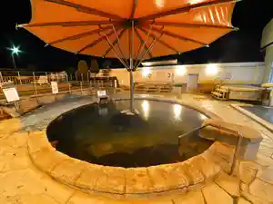
Higashimae Onsen Shinwano Yu Hoteru Akita Ya
ホテル七重浜
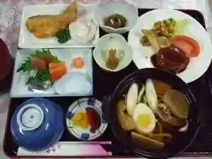
Hoteru Nanaehama
ゲストハウス函館クロスロード
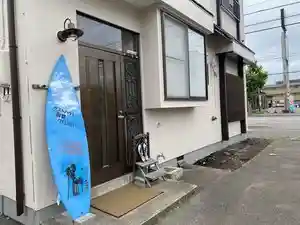
Gesutohausu Hakodate Kurosuroodo
東横ＩＮＮ新函館北斗駅南口
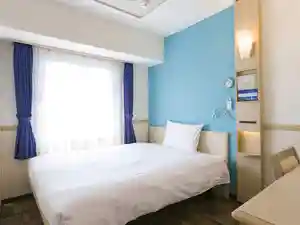
Touyoko I N N Shin Hakodate Hokuto Eki Minamiguchi
ホテル・ラ・ジェント・プラザ函館北斗
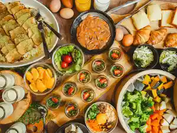
Hoteru Ra Jiento Puraza Hakodate Hokuto
Dining
炭火焼肉ひび屋
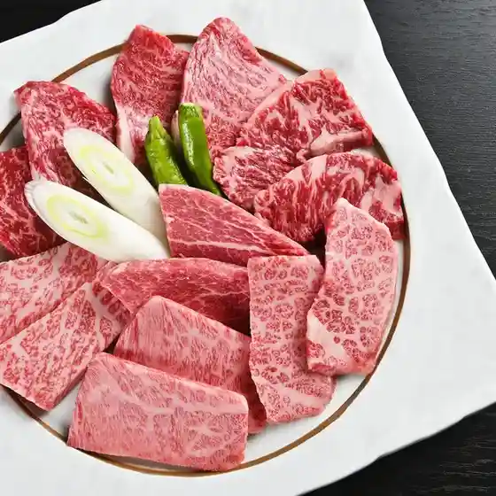
Sumibi Yakiniku Hibi Ya
牛角 上磯店
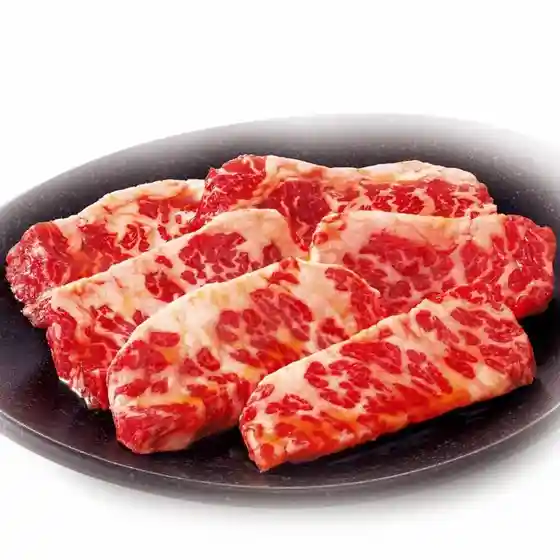
Gyuukaku Kamiiso Mise
魚民 七重浜店

Uotami Nanaehama Mise
hapo
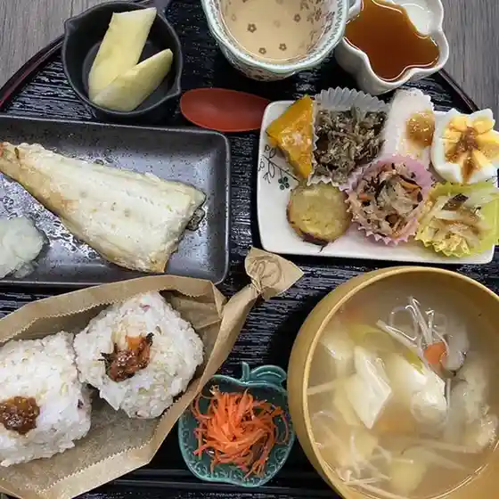
Hapo
レストハウス いながわ
Resutohausu Inagawa
居酒屋一歩

Izakaya Ippo
ほっとマルシェ おがーる
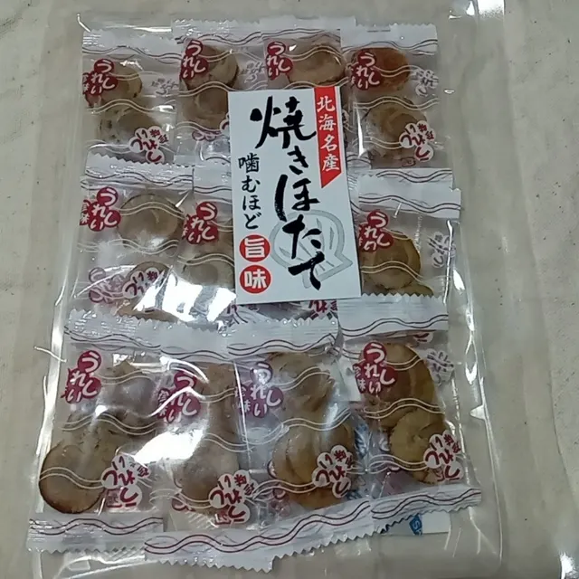
Hotto Marushie Ogaaru
FLOAT
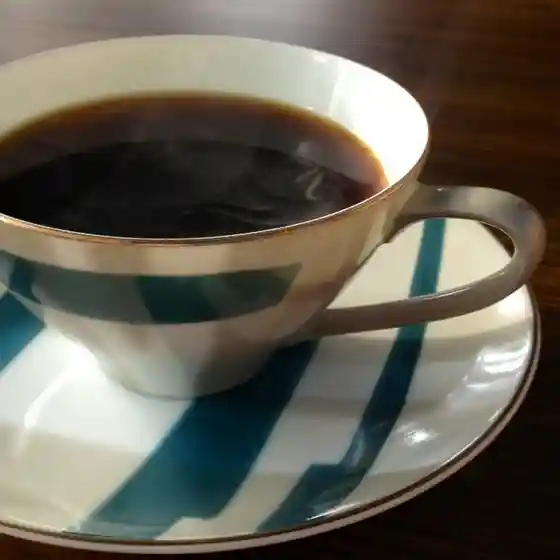
Float
カルドカルチョ
Karudokarucho
トラピスト修道院製酪工場売店
Torapisuto Shuudouin Seiraku Koujou Baiten
クレッセンド
Kuressendo
薬膳カフェ maomao
Yakuzen Kafe Maomao
居酒屋ぬの川
Izakaya Nuno Kawa
梅津旅館
Umezu Ryokan
柳園
Ryuuen
とんかつかつきち 上磯店
Tonkatsukatsukichi Kamiiso Mise
モスバーガー 七重浜店
Mosubaagaa Nanaehama Mise
喫茶 ポニー
Kissa Ponii
小料理ゆう花
Koryouri Yuu Hana
六輪村休み処小昼
Roku Wa Mura Yasumi Tokoro Kohiru
志づ川
Kokorozashi Zu Kawa
ケンタッキーフライドチキン イオン上磯店
Kentakkiifuraidochikin Ion Kamiiso Mise
228 COFFEE ROASTERY
228 Coffee Roastery
原始焼き酒場 さくら井
Genshi Yaki Sakaba Sakura I